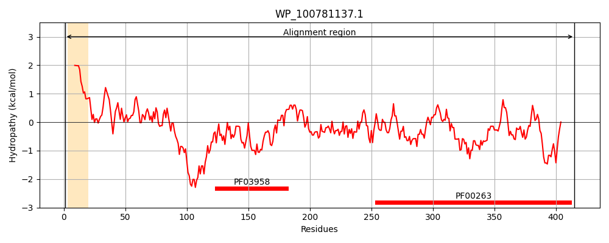
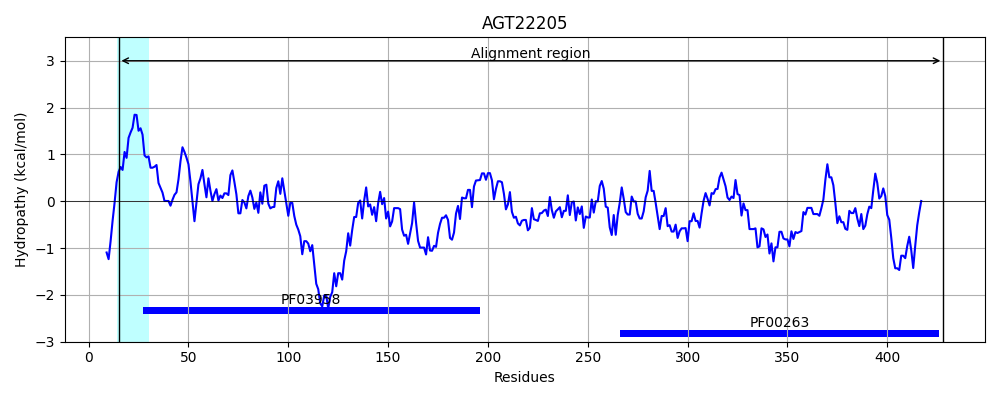
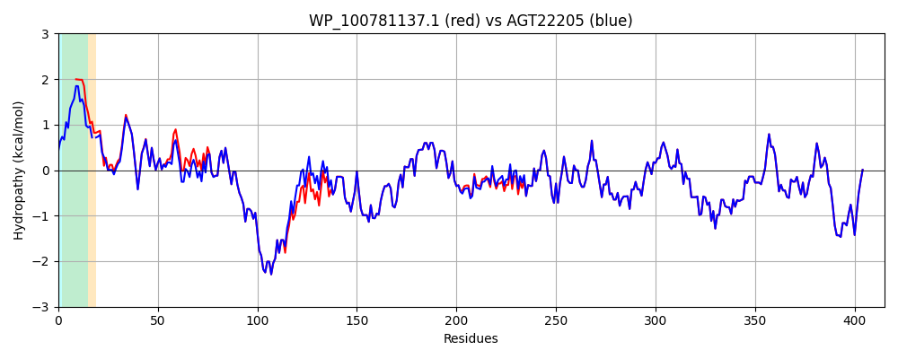

Hit Accession: AGT22205
Hit TCID: 1.B.22.4.4
Hit Description: gnl|BL_ORD_ID|1124 gnl|TC-DB|AGT22205.1|1.B.22.4.4 outer membrane porin HofQ [Klebsiella pneumoniae JM45]
Mach Len: 415
e:0.000000
Query TMS Count : 1
Hit TMS Count: 1
TMS-Overlap Score: 0.700000
Predicted Substrates:CHEBI:4291;deoxyribonucleic acid
BLAST Alignment:
Score: 1939 , Bit scores: 751 bits, E-value: 0.0e+00, Alignment length: 415, Percentage identity: 95
Query: 1 MMRWISLLLLLLLLPLAAGAARNEKTISLVVDDAPVAHVLQALAEMNHKNLVVAPDVSGTLSLHLQTVPWTQALRAVADSAGLSLQQQGTVIYAHTQAWQKANQAQREAEQEKRLQNLPLQAENVTLHYADAEELAKTGGKLLSARGHLMADKRTNRLLIRDDARHLPALKAWAQEMDLPVGQVELAAHIVSMSETSLRELGVKWRLAEAGGSPGSGQITTLSSDMSVNDASTRAGFNIGKINGRLLELELSALERKQQVDIIASPRLLASHMQPASIKQGSEIPYQVSSGESGATSVEFKEAVLGMEVTPTVLQQGRVRLKLRISENTPGQVLKQDNGEALAIDKQEIETLVEVRSGETLALGGIFSQKNKTARDSVPLLGDIPVLGRLFRRDGKDNERRELVVFITPRILAVR 415
MMRWISLLLLLL L +A AARN+K +SLV+DDAPVA VLQALAEMNHKNLVVAPDVSGTLSL LQ VPW+QALRAVADSAGLSLQQQGTVIYAHTQAWQKANQAQREAEQEKRLQNLPLQAE+VTLH+ADAEELAK+GGKLLSARGHLMADKRTNRLLIRDDARHLPALKAWAQEMDLPVGQVELAAHIVSMSETSLRELGVKWRLAEAG PGSGQITTLSSD+SVNDASTRAGFNIGKINGRLLELELSALERKQQV+IIASPRLLASHMQPASIKQGSEIPYQVSSGESGATSVEFKEAVLGMEVTPTVLQQGRVRLKLRISENTPGQVLKQ+NGEALAIDKQEIETLVEVRSGETLALGGIFSQKNKTARDSVPLLGDIPVLGRLFRRDGKDNERRELVVFITPRILAVR
Sbjct: 15 MMRWISLLLLLLPLAVAP-AARNDKPVSLVIDDAPVAQVLQALAEMNHKNLVVAPDVSGTLSLRLQKVPWSQALRAVADSAGLSLQQQGTVIYAHTQAWQKANQAQREAEQEKRLQNLPLQAESVTLHFADAEELAKSGGKLLSARGHLMADKRTNRLLIRDDARHLPALKAWAQEMDLPVGQVELAAHIVSMSETSLRELGVKWRLAEAGSPPGSGQITTLSSDVSVNDASTRAGFNIGKINGRLLELELSALERKQQVEIIASPRLLASHMQPASIKQGSEIPYQVSSGESGATSVEFKEAVLGMEVTPTVLQQGRVRLKLRISENTPGQVLKQENGEALAIDKQEIETLVEVRSGETLALGGIFSQKNKTARDSVPLLGDIPVLGRLFRRDGKDNERRELVVFITPRILAVR 428 | Protein Hydropathy Plots: |
|---|
|  |  |
Pairwise Alignment-Hydropathy Plot:
|
|---|
|  |